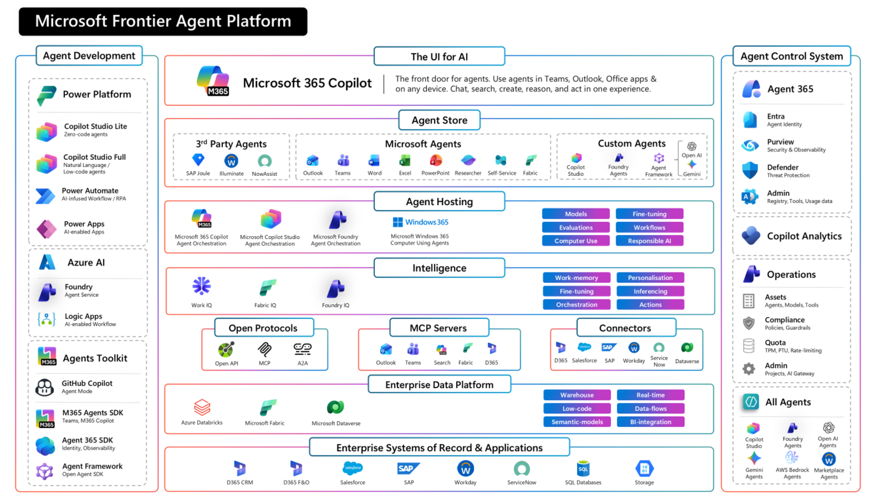

If you zoom out on what's happening with AI right now, there's a trap many organisations are walking into: "AI everywhere" doesn't automatically become a platform. It becomes a patchwork — different agent experiences, different controls, different risks, and a lot of accidental "shadow AI".
Here's how I explain what a real enterprise agent platform needs to look like if we want agents to become durable, governable digital labour — not just impressive demos.
1. Task migration: why "everyone can build agents" matters
The most important shift isn't just that agents exist. It's where they get built. We're seeing "task migration" in real time: agent creation moves closer to the people who understand the work best — business teams, analysts, operations leads — not just professional developers. That only works if we provide the right toolchain for every builder persona: zero-code for simple, safe automation; low-code (Copilot Studio, Power Platform) for business-developed solutions; and pro-dev (Microsoft Foundry, Azure, SDKs) for engineered agents that need full control, testing, and CI/CD.
2. Microsoft 365 Copilot as the "front door"
A platform needs a reliable surface where humans consistently discover, use, and collaborate with agents — multi-surface (Teams, Outlook, Word, Excel, PowerPoint), multi-model (so teams match capability, cost, latency and policy to the task), and multi-modal (slides, spreadsheets, documents, meetings, media). When Copilot is consistently present across apps, you get a single place to discover agents, delegate tasks, and standardise how humans and agents collaborate — including first-party agents like Researcher, Analyst and Facilitator, plus agents built in Copilot Studio or sourced from partners.
3. The intelligence layer: Work IQ
A lot of "agent platforms" talk about models and tools. But what makes agents valuable at enterprise scale is intelligence that sits above individual prompts — intelligence that works for both humans and digital employees. That's where Work IQ comes in: it connects to organisational context and signals (collaborators, meetings, documents, workflows) and turns that into intelligence that improves relevance, grounding, and action in the flow of work — specialising by domain with Fabric IQ and Foundry IQ. Models matter, but intelligence is what makes them useful at scale.
4. Openness: OpenAPI, MCP, A2A — and Computer Use
Enterprises don't want to rebuild their world around one stack. They want agents that can call tools and APIs through standard interfaces (OpenAPI), connect to tool servers consistently (MCP), and increasingly work with other agents across boundaries (A2A) — plus connectors for the thousands of systems a real enterprise runs. And because not everything worth automating has an API, the platform also needs Computer Use (Windows 365 for Agents) so agents can operate in the same UI surfaces humans use when the "last mile" of work still lives in legacy apps and portals.
5. Data platform strength
A lot of agent conversations fixate on retrieving documents and calling APIs. But in real enterprises we often need to shape, govern, and productise data — quality, lineage, semantics, permissions, real-time pipelines, and a shared, governed view across the agent estate. That's why platforms like Microsoft Fabric, Azure Databricks, and Dataverse matter in the stack: not as "yet another place to store data", but as a way to ensure agents operate on a consistent, governed foundation.
6. The big one: the Agent Control System — and why Agent 365 matters
Once agents can act, they become a new execution layer in the enterprise. So the control plane cannot be an afterthought. A real Agent Control System provides identity (each agent is an addressable actor, not a hidden service account), security and policy, observability, threat protection, and lifecycle. This is where Agent 365 matters — and the key framing is not "licensing an app", it's enabling the concept of a digital employee: its own identity, its own lifecycle, its own risk footprint, governed like an organisational actor.
The reason I'm bullish on this architecture is simple: it treats agents like a workforce, not a feature. And if agents are going to scale — especially in regulated environments — governance can't be a bolt-on. A digital employee needs an ID badge, guardrails, and supervision, just like a human does.